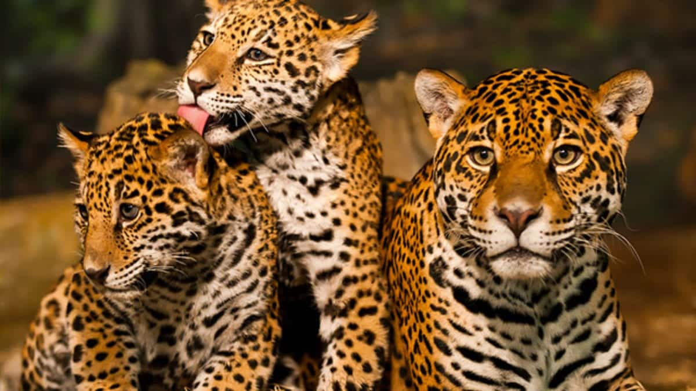

Bem-vindo ao Vida Aminal
Você já imaginou viver em um mundo sem os animais?
Nesse momento, alguns de vocês devem estar pensando em seus animais de companhia. Outros, lembrando do alimento que chega às suas mesas. De seu sustento dependente da produção animal e imaginando florestas, desertos, mares e rios sem os seres que os habitam. E, talvez, alguns de vocês nunca tenham parado para pensar sobre isso. Nesse contexto, precisamos ampliar nossa visão sobre a importância dos animais em nosso cotidiano e como sua ausência comprometeria a existência humana.
O termo domesticação vem de domus, lar, o que significa que os humanos trouxeram algumas espécies de animais para perto de casa. Embora essa domesticação tenha começado por objetivos principalmente utilitários, o contato cotidiano estabeleceu necessariamente uma relação. Uma relação saudável com um animal de companhia traz benefícios à saúde de seus tutores, seja física, mental, emocional, social ou cognitiva.
